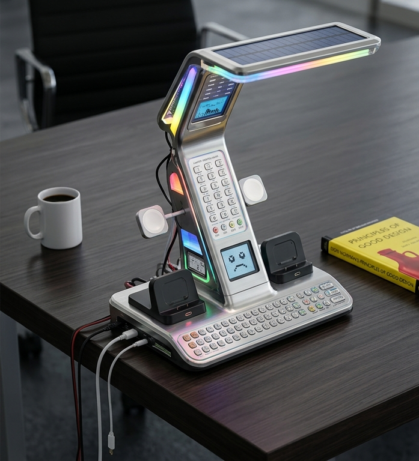
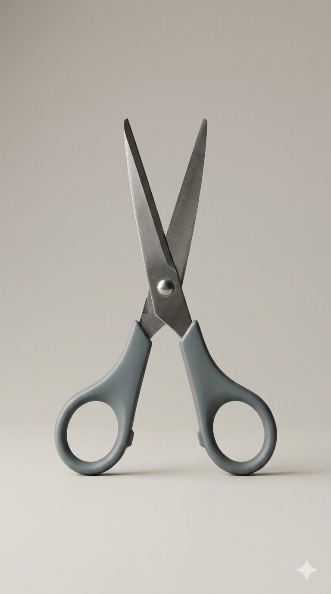
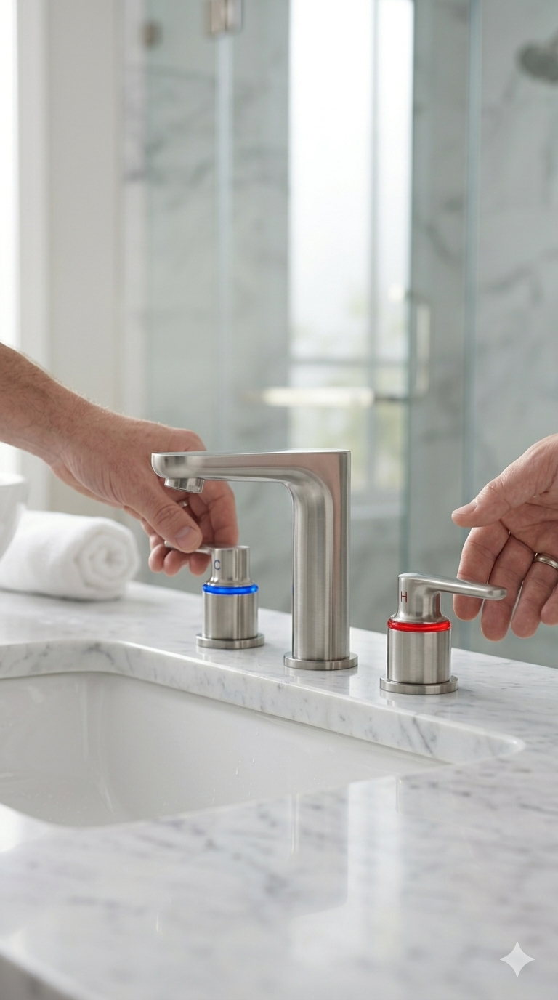

When you struggle with a device, the blame lies with the technology and the lack of care in its design, not your abilities. This interactive platform empowers designers and curious users to overcome modern product complexity by advocating for human-centered practices that prioritize clarity, simplicity, and intuitive communication between the object and the person using it.

An example of a poorly designed lamp. Designers must ask: why is this lamp not working?—
The Platform Manifesto
We champion a return to physical intuition and clear affordances. Good design is an act of communication where the object explains its operation through its physical structure, eliminating the need for instruction manuals. This 3D lamp embodies these principles as it tells you exactly how to use it just by its shape. The top directs light right where you need it, and the visible joints show you how to bend the arm to move that light. Its base keeps the lamp steady on your desk, while the cord exit shows you where to plug it in. When you use the switch, you feel a click so you know that the lamp has turned on or off.
Featured Clip
THE DESIGN OF EVERYDAY THINGS — A SHORT VID
This clip explores how everyday objects communicate their function — and how often they fail. From confusing door handles to overcomplicated washers and dryers, bad design is everywhere.
Runtime: 5 seconds · Produced by the Form & Flow Initiative in collaboration with RunwayML · 2026

FORM FOLLOWS
FUNCTION
affordance

NATURAL
CONTROL
Next
CASE STUDIES & 3D